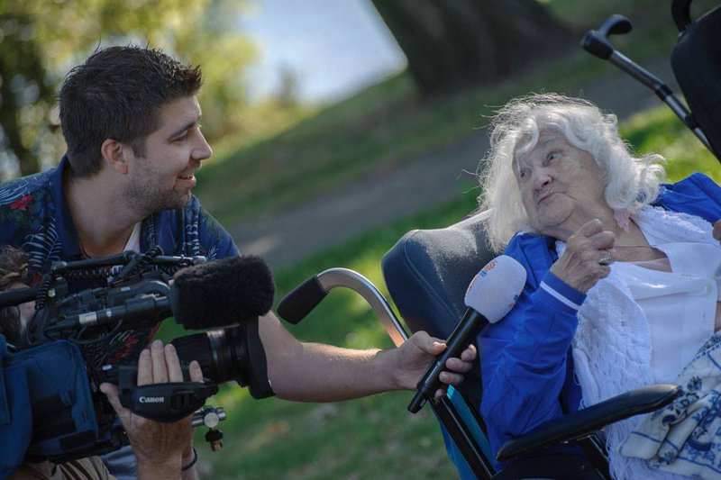
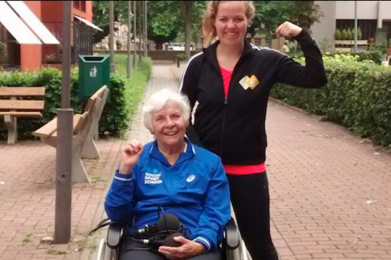

Persoverzicht
Open Huis, NPO Radio 5: Sociale Sportschool genomineerd voor Dutch Fitness Award
Hallo Nederland, NPO 2 (reportage start na 9.40 minuten)
Eindhovens Dagblad: 93 jaar en toch met de rollator naar bootcamp in Eindhoven
Algemeen Dagblad: Bootcampers en ouderen sporten samen tijdens de Sociale Sportschool
Brabants Dagblad: Gewichtheffen met fles advocaat en push ups tussen de rolstoelen
{kind=link}
Open Huis, NPO Radio 5: Sociale Sportschool: Bootcamp met ouderen
Vakblad Sport Bestuur en Management/Website allesoversport.nl: De Sociale Sportschool: serieus sporten met een sociaal karakter
NL Actief: De Sociale Sportschool: serieus sporten met een sociaal karakter
BN De Stem: Sociale Sportschool verbindt senioren en sporters
De Nieuwe Praktijk: Sporters en ouderen samen op bootcamp bij de Sociale Sportschool
Invoorzorg: Sporters en ouderen samen op bootcamp bij de Sociale Sportschool
Groot Eindhoven: Sociale sportschool in Eindhoven
Stadskrant Veghel: Bootcamp voor senioren in het Julianapark: 'Een win-winsituatie'
Eindhovens Dagblad TV: Bootcamp: sociaal sporten met ouderen
Het Stadsblad Breda: Breda Vitaal brengt Sociale Sportschool naar de stad
Breda vandaag: Vitaal Breda haalt Sociale Sportschool naar de stad
Dichtbij: Bossche bejaarden doen mee aan een bootcamp met hun rolstoel als fitnessapparaat
Het Klaverblad: start platform Sociale Sportschool
Pers en downloads
Hier vind je een aantal hoge resolutie foto’s die je kunt gebruiken voor publicaties. Altijd met vermelding van de fotograaf! Voor meer informatie, interviewaanvragen of andere mediazaken kun je direct contact met ons opnemen. Stuur even een mail naar info@socialesportschool.nl
HR Foto Sociale Sportschool Ben Nienhuis
{kind=link}
{kind=link}
{kind=link}
Hallo Nederland NPO 2
Het televisieprogramma Hallo Nederland maakte een reportage over de Sociale Sportschool. Bekijk hier de uitzending (reportage start na 9.40 minuten).
Open Huis NPO Radio 5
Verslaggeefster Martine van der Spek van het programma Open Huis (NPO Radio 5) deed mee met een Sociale Sportschool bootcamp. Beluister hier de reportage die zij maakte.